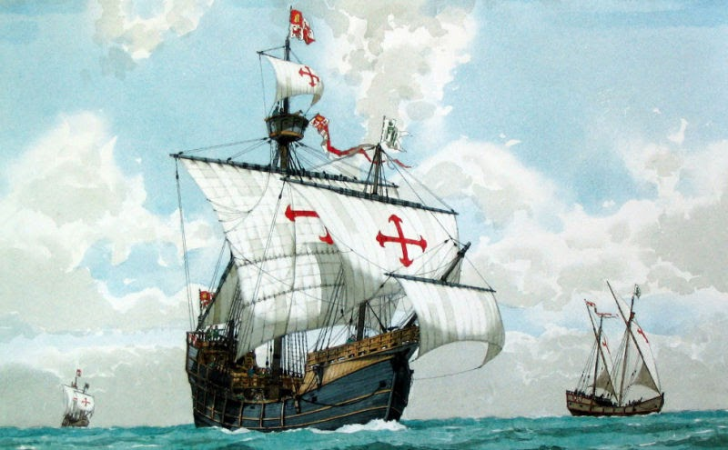

Каракка «Санта-Мария»
«Санта-Мария» — главный корабль первой экспедиции Христофора Колумба, в процессе которой и была открыта Америка. Само судно было всего 25 метров в длину и вмещало на борт до 40 человек. Однако в XIV-XVI веках каракки были самыми крупными, надежными и быстроходными судами в европейском флоте. В основном их использовали для торговли и дальних океанских плаваний.
Во время первой американской экспедиции Колумба каракка «Санта-Мария» села на рифы у берегов Гаити. Команда сняла с корабля все вооружение и забрала припасы. Остов судна использовали для строительства гаитянского форта «Ла-Навидад». К сожалению, до нас не дошло ни одно оригинальное изображение этого знаменитого корабля. Остается довольствоваться только созданными впоследствие рисунками.